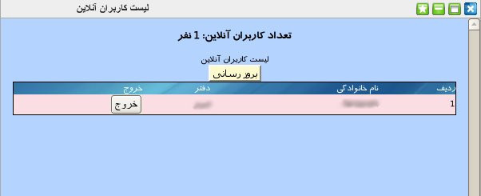

۱-لیست کاربران آنلاین
برای تسهیل در نظارت بر عملکرد افراد مجموعه امکان مشاهده کاربران فعال در سیستم برای مدیریت ایجاد شده است و در صورت نیاز مدیریت می تواند کاربر مورد نظر خود را از سیستم خارج نماید.

با کلیک بر روی دکمه بروزرسانی لیست کاربران فعال در سیستم را در لحظه می توان مشاهده نمود. در صورت نیاز به خروج یک کاربر خاص از سیستم می توان بر روی دکمه خروج تعبیه شده در ستون آخر پنل کلیک نموده و کاربر از سیستم خارج می شود.